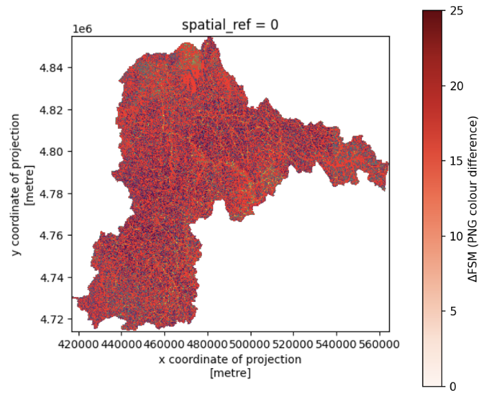

Smarter Flood Mapping: Adding the Human Footprint
Most flood models look at the land as nature made it: rivers, slopes and rainfall. But in places like Rwanda's Nyabarongo catchment, people are reshaping the land fast. Roads, buildings and lost wetlands all change where water goes. The Kurinda project set out to test whether satellite data could capture that human footprint and make flood prediction more accurate.
What has been done
The project began by reproducing an existing ten-variable Random Forest flood model for the Nyabarongo catchment. The catchment was divided into more than 213,000 grid cells of roughly 200 m each, giving a trusted baseline to build on.
A gap soon became clear. Studies of urban flooding repeatedly rank impervious surfaces (hard ground that water cannot soak into) among the top predictors of flood risk, yet the baseline model did not include them directly. To address this, new predictors were built from free Sentinel-2 satellite imagery, processed using Google Earth Engine and QGIS.
What is new
Three human-impact variables were developed and tested:
- Built-up percentage: how much of each grid cell is covered by buildings and hard surfaces.
- Vegetation change: how much greenness was lost between a 2018-19 baseline and 2023.
- Wetness decline: areas of previously wet land that have dried out, a sign of lost natural flood buffering.
To avoid mistaking seasonal cycles for genuine change, the same months (July to December) were compared across years, and clouds and shadows were masked out of all imagery.

What was found
The strongest result came from adding built-up percentage alongside the existing curve number. This lifted model accuracy from 92% to 97%, and the agreement score (Cohen's Kappa) rose from 0.84 to 0.93.
At first glance, the overall flood susceptibility map looks similar to the baseline. A closer pixel-by-pixel comparison shows otherwise: around 21% of pixels changed. The improved model is picking up local detail that the original missed.

What comes next
Satellites can only reveal so much. The next step is to combine these results with low-cost ground sensors, using measured soil moisture and ground movement to verify what the satellites see and sharpen the model further. The aim is a more accurate picture of how human land use shapes flood and landslide risk across Rwanda.
Everything is open source, with full documentation available on the project's GitHub page.